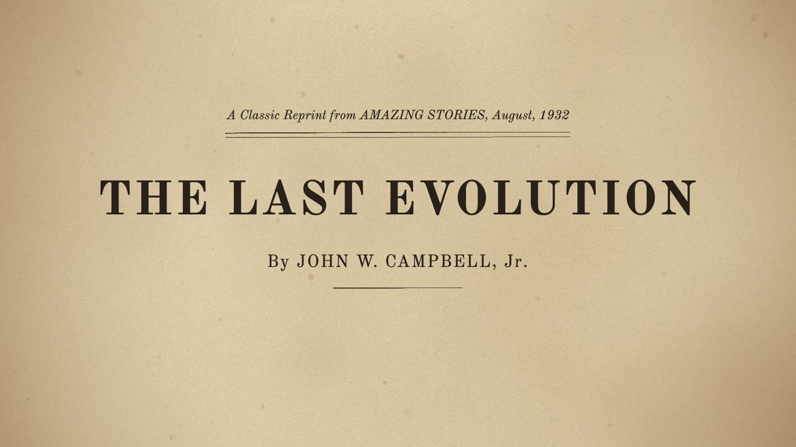
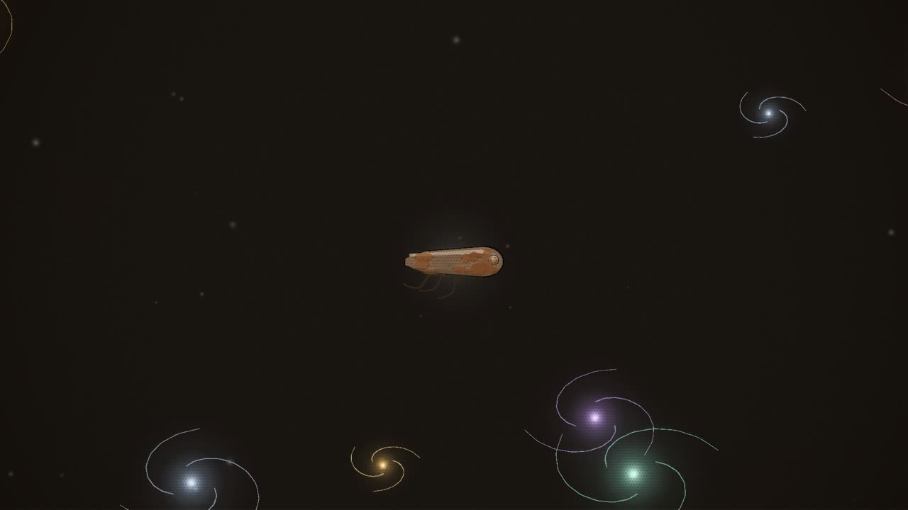
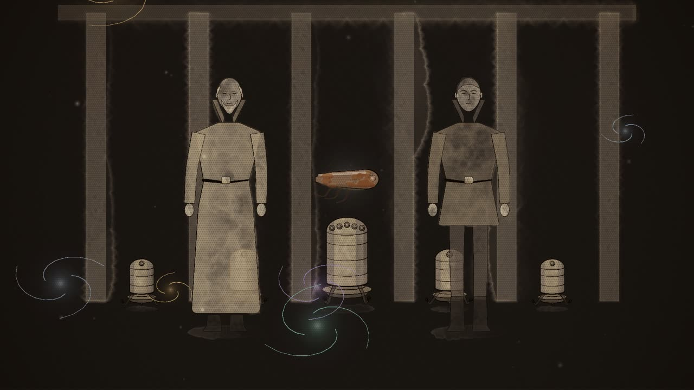
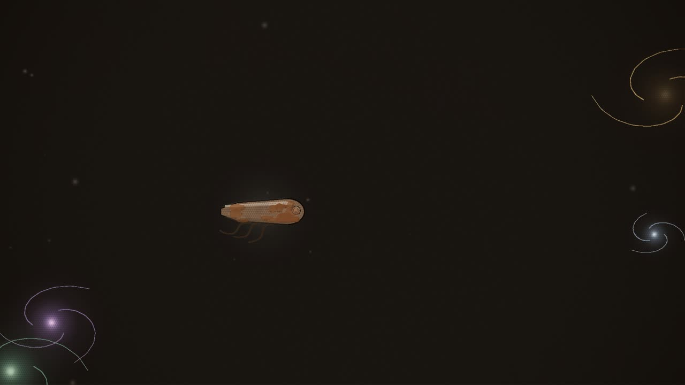
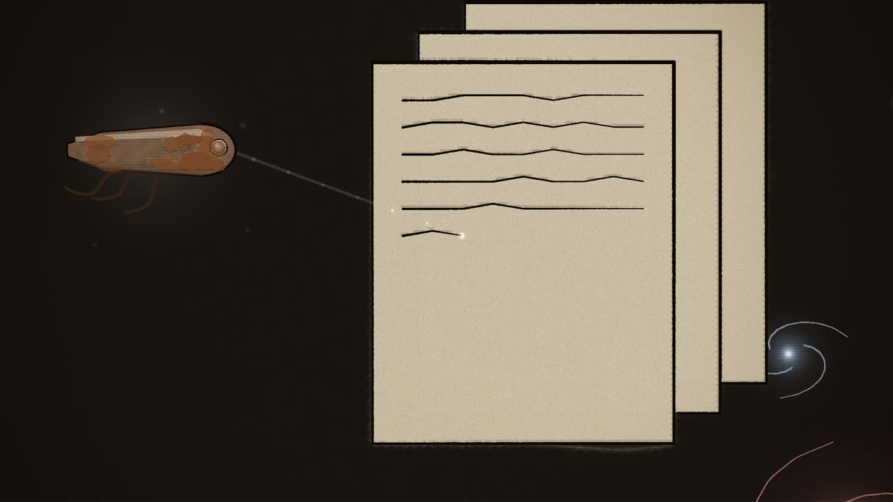

Review · Round 6 · the chapters · the whole film
Chapter 0: The Record, the draft
The latest draft, acted and painted, 0:58 at 12 drawings a second, over the same sound as the storyboard. The frame that opens the film: the title page, then the narrator in the far future. The beings of force are the only full colour in the film until chapter 11 comes back to them. The memories are drawn in the grey of 2538.
Notes: pause anywhere, type, and press Enter (or Pin) to pin a note to that moment. They stay in this browser. Copy notes puts them on the clipboard as text, timed and with their shot, for the decision sheet or a message.
Notes
The shots

A The title page 0:00–0:14
seenThe magazine's page: "A Classic Reprint from AMAZING STORIES, August, 1932" over a double rule, THE LAST EVOLUTION in large capitals, and the byline.
cameraa slow push to the title

B The last of its type 0:14–0:27
seenSpace, a hundred and twenty-five thousand years on. A small torpedo of metal, F-2, old, oxidised to brown, hangs alone. Far around it drift beings of force, soft lights in every colour.
camerapushes in from the wide to the old machine

C Memory 0:27–0:34
seenAround the old machine, grey ghosts of the past in wash: the fluted piers of the Denver hall, a ring of machines of 2538, the chief ruler with its crown of lenses, Roal and Trest standing.
camerapulls back to take in the ring of memories

D It will pass 0:34–0:51
seenThe memories thin away. A being of force passes close, bright and silent; the old machine is dim beside it.
cameradrifts with the passing light, then back to the machine

E The mentatype 0:51–0:58
seenThin sheets of metal hang before the machine; a fine beam from its lens rules lines across the nearest.
cameraa push into the sheet